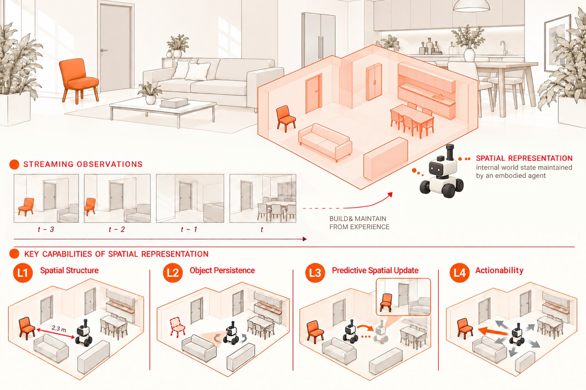

Frozen-feature probing · 10 models · 4 levels
Probing Spatial State Representations in Visual Foundation Models
Ten frozen vision models read the room in ten different ways.
None of them does well at all four things a spatial state needs: reading the scene, keeping it beyond view, updating it under motion and acting on it.
Live · drag to turn
heading 140° · FOV 72°
in view orange chair
A toy apartment, rendered live in your browser. Turn away from the orange chair: the floor plan keeps a dashed outline where it was. That record of where things are relative to you, including things you can no longer see, is what we call a spatial state.
Memory test
Can you point to the chair?
You get three seconds to look at the room. Then the camera turns away and you point to where the object is now. This is the paper's object persistence test, with you as the subject.
Round 1 of 5 · ready
Press start. You will see the room for three seconds, then the camera turns away.
Your error next to the ten frozen models
The models were scored on real ScanNet++ scans: a trained probe reads frozen features and predicts the 3D direction to an object seen earlier. Your rounds use this toy room and a flat dial, so read the comparison as a sense of scale, not a benchmark.
Four levels
What a spatial state lets you do
We don't assume a 3D map, a scene graph or any particular architecture. A spatial state is characterized by what it supports, at four levels that climb from reading the scene to acting in it.
Read the geometry of what is in view
Depth at every pixel, the camera's pose, which pixels belong to which object, and whether two views show the same place. Switch what the camera shows:
Depth loss, lower is betterFast3R 0.135
Camera pose AUC@30, higherFast3R 0.385
Instance identity loss, lowerDINOv2 1.26
View consistency, balanced acc.Fast3R 0.983
Best of the ten frozen representations on each measurement.
Keep track of what left the view
The probe gets an object's appearance from an early frame and must point to it from the final camera, after the object is out of view. It is never told where the object was or how the camera moved. Drag the view to turn; arrows on the plan point to what you remember.
Angular error to the hidden objectVideoMAE 55.5°
Worst of tenMiniMax-H3 79.5°
Scored over 16 azimuth × 8 elevation bins around the final camera; random pointing would average 90°.
Anticipate the view after a move
Given the current features and the next camera motion, predict the next frame's features, or integrate a whole sequence of moves. Pick a move to see the view you should expect, then make it.
Pick a move.
One-step prediction R@1Qwen2.5-VL 0.238
Path integration R@1DINOv2 0.147
A prediction counts when it retrieves the true future frame among all samples, scored in each model's own feature space.
Use the state to reach a goal
The goal is this view. Which of the two moves on the plan gets you closer?
Pick a move.
Pick the better of two moves76–80%
Knowing only the two moves67.8%
Output the move itself: makes progress50–60%
Four backbones tested: DINOv2-L, Fast3R, V-JEPA 2 and Wan2.1.
L1 · color
expected next view

How we ask a frozen model
The backbone never changes. A causal prefix of p frames goes through it, we take the features of one layer and train a small probe to read out a spatial target. The future frame h steps ahead is encoded on its own, so the answer can't leak into the input.
prefix p
future h
frames 1–16→
frozen encoder, layer ℓ→
features Z→
trained probe→
depth, pose, objects, direction, next frame…
Benchmark
No model wins everywhere
Ten frozen representations, seven measurements, four different winners. Click a column to rank by it, or pick a model to see its profile.
Cell shading follows the rank within each column (darker is better). Outlined cells are the best of ten. Values from the paper's main table, ScanNet++.
What the table says
1 / 5
10×
Layers and context
Where and when you read matters
The same backbone answers differently depending on which layer you read and how much video it has seen. Layer and prefix are part of the evaluation, not a detail.
Network depth
block 05111723
Streaming context: 24 frames against 8
82%
of 55 paired comparisons favour the shorter prefix. Every model gets worse at object persistence and path integration with the longer one.
Standardized, direction-corrected change from p8 to p24; − means the longer prefix hurts. A longer prefix also moves the endpoint, so this does not isolate history alone.
Downstream
One errand, four key operations
A household robot walked past a mug on the kitchen counter and on into the living room. Now it has to bring the mug to the coffee table. Each step of the errand leans on one level of spatial state. Pick a frozen backbone and see where the errand breaks.
robot camera
The robot, apartment and errand are an illustration, and no robot ran. Each step replays the number the paper measured for that backbone with frozen features and a trained probe on ScanNet++. A step counts as broken when that average misses what the step needs, such as bringing the mug back inside the 72° field of view.
Controls
Decodable is not the same as used
A probe can score well through shortcuts. So we keep the trained probe and the target fixed and change only the input: the motion, the history, the goal. Flip the inputs yourself.
Does the readout use the motion and the history?
Can you read V-JEPA 2's own predictions?
Does the goal steer the move, and does it help?
Video
The paper in three minutes
Takeaway
Readable, used, useful
decodabilityReadable?
Can the information be read out of frozen features at all? Often, but which model, layer and prefix you use changes the answer.
input useUsed?
Does the readout rely on the motion, the history and the goal it is given? Not reliably: copying can beat prediction, and history helps some models only.
functional utilityUseful?
Does it help behavior? Goals steer predicted moves by 30–46°, yet the correct goal does not reliably make more progress.
To judge whether a visual model holds a spatial state, ask not only what can be decoded, but whether it can be kept beyond view, updated under motion and used to act.
Abstract
An observer sees only part of the surrounding world, yet must keep track of what lies beyond the current view. Spatial perception therefore concerns more than recognizing individual images: it calls for a persistent spatial state that can be updated under self-motion and used to guide action. Do visual foundation models provide representations that support such a state? We investigate this question through four levels of spatial capability: spatial structure, object persistence, predictive spatial update, and actionability, using frozen feature probes across ten representations under streaming egocentric observations in static indoor environments. The resulting capability profiles vary across tasks, network layers, and prefix lengths: strong visible scene readout does not ensure accurate object persistence or future feature retrieval. Matched controls further distinguish readout accuracy from reliance on visual history and motion. Native future prediction retains recoverable spatial structure but changes its interface to a fixed spatial readout. Finally, goal-dependent candidate selection does not establish reliable continuous action utility: in the continuous output setting, predicted actions respond to goal changes, yet using the correct goal does not reliably improve progress. Together, these findings motivate evaluating spatial representations not only by what can be decoded, but by whether that information can be maintained beyond observation, predictively updated, and used for goal-directed action.
BibTeX
@misc{yin2026probing,
title = {Probing Spatial State Representations
in Visual Foundation Models},
author = {Yin, Baiqiao and Cai, Zhongang
and Wang, Ruisi and Liang, Qiwei
and Yang, Lei and Liu, Ziwei},
year = {2026},
note = {Under review}
}Scope: offline, probe-based diagnostics with frozen features in static indoor scenes. A probe that fails does not prove that a model lacks the ability.